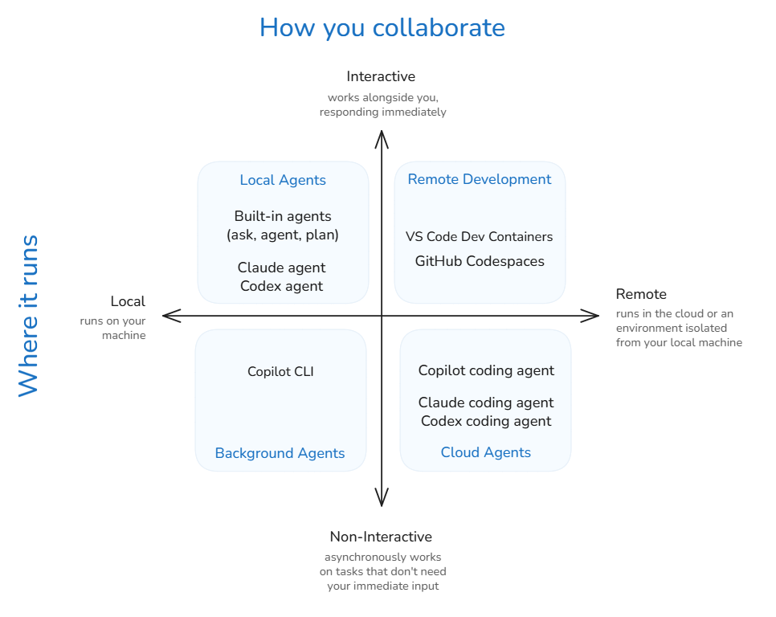

智能体
智能体是一个能够自主规划和执行编码任务的 AI 系统。你给智能体一个高层次目标，它会将该目标分解为步骤，使用工具执行这些步骤，并在遇到错误时进行自我纠正。本文介绍智能体的核心架构：智能体循环、智能体类型、子智能体、记忆和规划。
关于你可以使用智能体在 VS Code 中做什么以及在哪里操作，请参阅在 VS Code 中使用智能体进行构建。
Follow a hands-on tutorial to experience local, background, and cloud agents in VS Code.
智能体循环
当你给智能体分配任务时，它会遵循智能体循环。这种模式在现代 AI 助手中很常见。在 VS Code 中，智能体是规划和执行操作的系统，而语言模型则生成指导这些操作的响应。
在每一步中，智能体评估其进展并选择下一个操作。它可能会打开一个文件来理解 API，进行编辑，然后运行命令来验证更改是否成功。每个操作的输出都会成为下一步决策的输入。

智能体循环通常包含三个高层次阶段：
- 理解。 智能体读取文件、搜索代码库、查阅文档，以了解需要更改什么。
- 行动。 智能体通过工具修改代码、运行终端命令、安装依赖项或调用外部服务。
- 验证。 智能体运行测试、检查编译错误并审查自己的更改。如果出现问题，它会继续迭代。
智能体使用语言模型来推理最佳行动方案。然而，如果没有与环境交互的能力，模型就仅能提供通用响应。有了工具，智能体在每一步都可以发出工具调用来收集信息并执行操作，例如读取文件、修改代码、运行终端命令以及访问外部服务。
智能体根据需要将这些操作串联起来，直到完成任务。回答关于代码库的问题可能只需要读取几个文件。实现一个新功能通常需要循环编辑、运行测试、诊断失败，然后再次编辑，直到测试通过。
在幕后，VS Code 将当前上下文组装成提示并发送给语言模型。模型以文本、代码编辑或工具请求的形式响应。当工具运行时，其输出会被添加到下一轮迭代的上下文中，这个循环会持续进行，直到任务完成。
在整个过程中，你始终掌握着控制权。你可以发送新消息来重定向智能体、添加上下文或建议不同的方法。有关审查更改和管理智能体行为的更多信息，请参阅信任与安全。
自定义智能体循环
智能体循环不是一刀切的，每个项目可能有所不同。有几种选项可以个性化智能体的行为：
- 通过自定义智能体，你可以定义不同的角色，每个角色都有自己的指令、可用工具、语言模型，并可以选择移交给另一个智能体。
- 通过智能体技能，你可以教授智能体针对特定领域或任务的新能力。
- 钩子在智能体循环的特定生命周期点运行自定义命令。
详细了解自定义概念。
智能体类型
智能体在不同的环境中运行，这取决于你何时需要结果以及你希望有多少监督。两个关键维度是智能体运行的位置（你的本地机器或云端）以及你与其交互的方式（交互式或在后台自主运行）。

有关每种智能体类型的描述，请参阅智能体类型下的各篇文章。有关选择在哪里操作智能体的指导，请参阅在 VS Code 中使用智能体进行构建。
子智能体
在处理复杂任务时，主智能体可以将子任务委托给子智能体。子智能体是一个独立的 AI 智能体，用于执行专注性工作，例如研究某个主题或分析代码，并将结果报告给主智能体。
子智能体的主要优势是上下文优化。如果没有子智能体，每次文件读取、搜索结果以及研究过程中的每个中间步骤都会累积在主智能体的上下文窗口中，可能会挤掉重要信息。子智能体在独立的上下文窗口中执行工作，只返回摘要，从而使主对话专注于手头的任务。
子智能体的关键特性：
- 上下文隔离：每个子智能体在其自己的上下文窗口中运行。它不会继承主智能体的对话历史或指令，只接收任务提示。
- 同步执行：主智能体在继续之前等待子智能体的结果，因为子智能体的发现通常会指导下一步。
- 并行执行：VS Code 可以同时生成多个子智能体，以并行执行诸如安全性、性能和可访问性分析等任务。
- 结果聚焦：只有最终结果返回给主智能体，从而保持主上下文的聚焦性并减少令牌使用量。
例如，内置的规划智能体使用子智能体在创建实现计划之前进行研究和分析。每个子智能体自主工作，仅返回其发现结果。
详细了解使用子智能体。
对话会话
对话会话是与智能体进行的单次对话，包括所有提示、响应以及在此过程中累积的上下文。每个会话都是独立的，拥有自己的上下文窗口，因此一个会话中的工作不会泄露到另一个会话中。会话是智能体工作的组织单位：你可以并行运行多个会话、在它们之间切换、分叉一个会话以探索替代方向，以及回滚到之前的检查点。
由于聊天视图和智能体窗口共享相同的会话，你可以在一个界面上开始任务并在另一个界面上继续。会话列表为你提供所有会话的统一视图，无论它们在何处运行。
详细了解管理对话会话。
远程智能体会话
智能体会话不一定要在本地机器上运行。你可以在远程主机上运行会话，并从智能体窗口、浏览器或其他客户端连接到它们。当你想要利用远程机器的资源、在你离开时保持会话运行，或从其他设备监控进度时，这非常有用。远程机器必须开机并可通过网络访问。
VS Code 支持两种使用远程智能体会话的方式：
| 方法 | 工作原理 | ||
|---|---|---|---|
| --- | --- | ||
| 通过远程连接的 智能体窗口 | 通过 SSH 或开发隧道将智能体窗口连接到远程机器。智能体窗口会自动在远程机器上安装并启动 VS Code CLI，该 CLI 运行一个管理会话的智能体主机进程。 多个客户端可以同时连接到同一个智能体主机，并使用开放的智能体主机协议（AHP）查看所有会话的同步视图。即使所有客户端都断开连接，会话仍会在远程机器上继续运行。 详细了解连接到远程机器。 | ||
| Copilot CLI 远程控制 | 在 Copilot CLI 会话中使用 /remote on 命令将会话镜像到 GitHub。然后，你可以在会话继续在你的机器上运行的同时，从 github.com 或 GitHub 移动应用监控和操控会话。详细了解 Copilot CLI 会话的远程控制。 |
记忆
智能体使用记忆在对话之间保留上下文。智能体不会每次会话都从头开始，而是会回忆你的偏好，应用之前任务中的经验教训，并随着时间的推移积累有关代码库的知识。
VS Code 支持两种互补的记忆系统：
- 记忆工具：一个内置工具，在本地机器上存储笔记，按三个作用域组织：
- 用户记忆（
/memories/）：跨所有工作区和对话持久存在。前 200 行会自动加载到每个会话中。- 仓库记忆（
/memories/repo/）：作用域限定在当前工作区，跨对话持久存在。 - 会话记忆（
/memories/session/）：作用域限定在当前对话，会话结束时清除。
- 仓库记忆（
- 用户记忆（
- Copilot 记忆：一个由 GitHub 托管的记忆系统，跨 Copilot 界面（编码智能体、代码审查、CLI）捕获特定于仓库的洞察。在 VS Code 之外的 GitHub Copilot 之间共享。
详细了解 VS Code 智能体中的记忆。
规划
对于复杂任务，直接跳到代码生成可能会导致不完整的实现或错误的架构决策。内置的规划智能体会与你协作，在研究任务并创建详细的实现计划之后再开始任何代码更改。这确保了需求被理解、边缘情况被识别，并且在智能体开始编写代码之前你就同意了方法。
规划智能体使用四阶段迭代工作流：
- 探索：使用只读工具和代码库分析来研究任务。
- 对齐：提出澄清问题以解决歧义。
- 设计：起草结构化的实现计划。
- 细化：根据你的反馈迭代计划。
在计划经过审查和批准之前，规划智能体不会进行代码更改。一旦获得批准，你可以将计划移交给默认智能体，或保存计划以便进一步细化。
详细了解使用智能体进行规划。